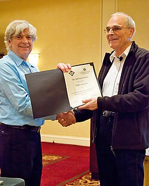

The Donald E. Knuth Prize is a prize for outstanding contributions to the foundations of computer science, named after the American computer scientist Donald E. Knuth.
The Knuth Prize has been awarded since 1996 and includes an award of US$5,000.[1] The prize is awarded by ACM SIGACT and by IEEE Computer Society's Technical Committee on the Mathematical Foundations of Computing. Prizes are awarded in alternating years at the ACM Symposium on Theory of Computing and at the IEEE Symposium on Foundations of Computer Science, which are among the most prestigious conferences in theoretical computer science. The recipient of the Knuth Prize delivers a lecture at the conference.[2] For instance, David S. Johnson "used his Knuth Prize lecture to push for practical applications for algorithms."[3]
In contrast with the Gödel Prize, which recognizes outstanding papers, the Knuth Prize is awarded to individuals for their overall impact in the field.
Since the prize was instituted in 1996, it has been awarded to the following individuals, with the citation for each award quoted (not always in full):[4]
| Year | Laureate | Citation |
|---|---|---|
| 1996 | Andrew Yao | "fundamental research in computational complexity"[5] |
| 1997 | Leslie Valiant | "far-reaching contributions to the study of computational complexity, parallel computation, and learning theory"[6] |
| 1999 | László Lovász | "enormous influence on the theory of algorithms" and "fundamental discoveries that have became standard tools in theoretical computer science"[7] |
| 2000 | Jeffrey Ullman | "sustained research contributions to Theoretical Computer Science, especially as it relates to applied areas of Computer Science such as compilers, parallelism, and databases; and for his contributions to Theoretical Computer Science education through textbooks and the mentoring of graduate students"[8] |
| 2002 | Christos Papadimitriou | "for longstanding and seminal contributions to the foundations of computer science"[9] |
| 2003 | Miklós Ajtai | "for numerous ground-breaking contributions to Theoretical Computer Science"[10][11] |
| 2005 | Mihalis Yannakakis | "for numerous ground-breaking contributions to Theoretical Computer Science"[12] |
| 2007 | Nancy Lynch | "for seminal and influential contributions to the theory of distributed computing"[13] |
| 2008 | Volker Strassen | "for his seminal and influential contributions to efficient algorithms"[14] |
| 2010 | David Johnson | "for his contributions to theoretical and experimental analysis of algorithms"[3][15][16][17] |
| 2011 | Ravi Kannan | "provided theoretical computer science with many powerful new algorithmic techniques"[18] |
| 2012 | Leonid Levin | "in recognition of four decades of visionary research in complexity, cryptography, and information theory"[19] |
| 2013 | Gary Miller | "major impact on cryptography as well as number theory, parallel computing, graph theory, mesh generation for scientific computing, and linear system solving"[20] |
| 2014 | Richard Lipton | "for inventing new computer science and mathematical techniques to tackle foundational and practical problems in a wide range of areas in graph algorithms, computaiton, communication, program testing, and DNA computing"[21][22] |
| 2015 | László Babai | "for his fundamental contributions to theoretical computer science, including algorithm design and complexity theory"[23] |
| 2016 | Noam Nisan | "for fundamental and lasting contributions to theoretical computer science in areas including communication complexity, pseudo-random number generators, interactive proofs, and algorithmic game theory"[24] |
| 2017 | Oded Goldreich | "for fundamental and lasting contributions to theoretical computer science in many areas including cryptography, randomness, probabilistically checkable proofs, inapproximability, property testing as well as complexity theory in general"[25] |
| 2018 | Johan Håstad | "for his long and sustained record of milestone breakthroughs at the foundations of computer science, with huge impact on many areas including optimization, cryptography, parallel computing, and complexity theory"[26] |
| 2019 | Avi Wigderson | "for fundamental and lasting contributions to the foundations of computer science in areas including randomized computation, cryptography, circuit complexity, proof complexity, parallel computation, and our understanding of fundamental graph properties"[27][28] |
| 2020 | Cynthia Dwork | "for fundamental and lasting contributions to computer science. Dwork is one of the most influential theoretical computer scientists of her generation. Her research has transformed several fields, most notably distributed systems, cryptography, and data privacy, and her current work promises to add fairness in algorithmic decision making to the list."[29][30][31][32] |
| 2021 | Moshe Vardi | "for outstanding contributions that apply mathematical logic to multiple fundamental areas of computer science"[33][34][35] |
| 2022 | Noga Alon | "for foundational contributions in combinatorics and graph theory and applications to fundamental topics in computer science"[36] |
| 2023 | Éva Tardos | for "her extensive research contributions and field leadership, namely co-authoring an influential textbook, Algorithm Design, co-editing the Handbook of Game Theory, serving as editor-in-chief of the Journal of the ACM and the Society for Industrial and Applied Mathematics (SIAM) Journal of Computing and chairing program committees for several leading field conferences"[37] |
| 2024 | Rajeev Alur | for "outstanding contributions to the foundations of computer science for his introduction of novel models of computation which provide the theoretical foundations for analysis, design, synthesis, and verification of computer systems"[38] |
| 2025 | Micha Sharir | for "seminal contributions to computational and discrete geometry, the development of algorithmic motion planning, transforming the field of computational geometry, and inspiring generations of researchers"[39] |
| Year | Selection Committee |
|---|---|
| 1996 | Ronald Graham, (Chair AT&T Research), Joe Halpern (IBM Almaden Research Center), Kurt Mehlhorn (Max-Planck-Institut für Informatik), Nicholas Pippenger (University of British Columbia), Eva Tardos (Cornell University), Avi Wigderson (Hebrew University) |
| 1997 | |
| 1999 | Allan Borodin, Ashok Chandra, Herbert Edelsbrunner, Christos Papadimitriou, Éva Tardos (chair), and Avi Wigderson |
| 2000 | |
| 2002 | |
| 2003 | |
| 2005 | Richard Ladner, Tom Leighton, Laci Lovasz, Gary Miller, Mike Paterson and Umesh Vazirani (chair) |
| 2007 | Mike Paterson (Chair), Tom Leighton, Gary Miller, Anne Condon, Mihalis Yannakakis, Richard Ladner |
| 2008 | |
| 2010 | |
| 2011 | |
| 2012 | |
| 2013 | |
| 2014 | |
| 2015 | Russell Impagliazzo, (Chair, UCSD), Uriel Feige, (The Weizmann Institute of Science), Michel Goemans (MIT), Johan H˚astad (KTH Royal Institute of Technology), Anna Karlin (U. of Washington), Satish B Rao (UC Berkeley) |
| 2016 | Allan Borodin (U. Toronto), Uri Feige (Weizmann Institute), Michel Goemans (MIT, chair), Johan H˚astad (KTH), Satish Rao (UC Berkeley) and Shang-Hua Teng (USC). |
| 2017 | Allan Borodin, (Chair, U. of Toronto), Avrim Blum (CMU), Shafi Goldwasser (MIT and Weizmann Institute), Johan H˚astad (KTH – Royal Institute of Technology), Satish Rao (UC Berkeley), and Shanghua Teng (USC) |
| 2018 | Allan Borodin, (U. of Toronto), Alan Frieze (CMU), Avrim Blum (TTIC), Shafi Goldwasser (UC Berkeley), Noam Nisan (Hebrew U.) and Shang-Hua Teng (Chair, USC) |
| 2019 | Avrim Blum (Chair, TTIC), Alan Frieze (CMU), Shafi Goldwasser (UC Berkeley), Noam Nisan (Hebrew U.), Ronitt Rubinfeld (MIT and Tel Aviv U.), and Andy Yao (Tsinghua U.). |
| 2020 | Alan Frieze, Chair(CMU), Hal Gabow (U. of Colorado), Noam Nisan (Hebrew U.), Ronitt Rubinfeld (MIT), Eva Tardos (Cornell U.), Andy Yao (Tsinghua U.) |
| 2021 | Harold Gabow (Chair, U. Colorado), Noam Nisan (Hebrew U.), Dana Randall (Georgia Tech), Ronitt Rubinfeld (MIT), Madhu Sudan (Harvard U.), and Andy Yao (Tsinghua U.) |
| 2022 | Harold Gabow (U. Colorado), Monika Henzinger (U. Vienna), Kurt Mehlhorn (Max Planck Institute), Dana Randall (Chair, Georgia Tech), Madhu Sudan (Harvard U.), and Andy Yao (Tsinghua U.) |
| 2023 | David Eppstein (UC Irvine), Monika Henzinger (Chair, ISTA/U. Vienna), Kurt Mehlhorn (Max Planck Institute), Dana Randall (Georgia Tech), Madhu Sudan (Harvard U.), and Moshe Vardi (Rice U.) |
| 2024 | Edith Cohen (Google/Tel Aviv U.), David Eppstein (Chair, UC Irvine), Monika Henzinger (IST Austria), Kurt Mehlhorn (Max Planck Institute), Salil Vadhan (Harvard U.), and Moshe Vardi (Rice U.) |
| 2025 | Noga Alon (Princeton), Edith Cohen (Chair, Google/Tel Aviv U.), David Eppstein (UC Irvine), Valerie King (U. of Victoria), Salil Vadhan (Harvard U.), Moshe Vardi (Rice U.) |
{kind=link}